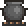

Mushroom
| Mushroom | |
|---|---|
| | |
| Statistics | |
| Type | Potion Crafting material |
| Max stack | 99 |
| Heal Health | 15 |
| Use time | 16 |
| Sell | 5 |
The Mushroom is a plant that spawns randomly in above-ground Grass. It can be eaten for 15 health restoration, or used at an Alchemy Station along with two Gel and two Bottles to craft Lesser Healing Potion, which restores 50 health. Players who use the potion hotkey may consume these by accident if they are in an inventory slot before the actual healing potion, so it is desirable to keep all preceding slots full or keep a permanent stack of mushrooms in a later slot.
Other types
A "Mushroom" generally refers to an ordinary orange/red-colored Mushroom that grows in ordinary green grass. There are two other mushroom types:
Farming
Strips of dirt can be placed and connected to grass, or grass can be spawned using Grass Seeds purchased from the Dryad. Grass can also be placed using the Staff of Regrowth.
Only one tile of vertical clearance is required, so dirt strips can be placed close together in groups of three (more than that and you may not be able to harvest them), one tile apart vertically. Mushrooms will not grow if there is any type of wall behind them, so make sure the sky is visible behind the dirt strips.
Mushrooms do not require water. They can spawn while on-screen, unlike Trees.
With the new dart trap mechanism, farms can be automated to some degree. The dart trap(s) can be linked to a pressure plate at the farm's entrance or a timer. a launched dart will cut all grass, mushrooms, etc, that it comes into contact with, allowing the player to run across the farm and grab the dropped mushrooms without a single swing of their sword.
Crafting
Used in
| Result | Ingredients | Crafting Station | |
|---|---|---|---|
| | Lesser Healing Potion(2) | Mushroom(1) | |
| Gel(2) | |||
| Bottle(2) | |||
| | Regeneration Potion | Bottled Water(1) | |
| Daybloom(1) | |||
| Mushroom(1) | |||
| | Bowl of Soup | Goldfish(1) |  Cooking Pot |
| Mushroom(1) | |||
| Bowl(1) | |||
History
- 1.0.6:
- Restoration reduced from 20 health points to 15.
- Consumption will now trigger the Potion Sickness debuff.
- 1.0.4: Sell value reduced.
- Pre-Release: Introduced.